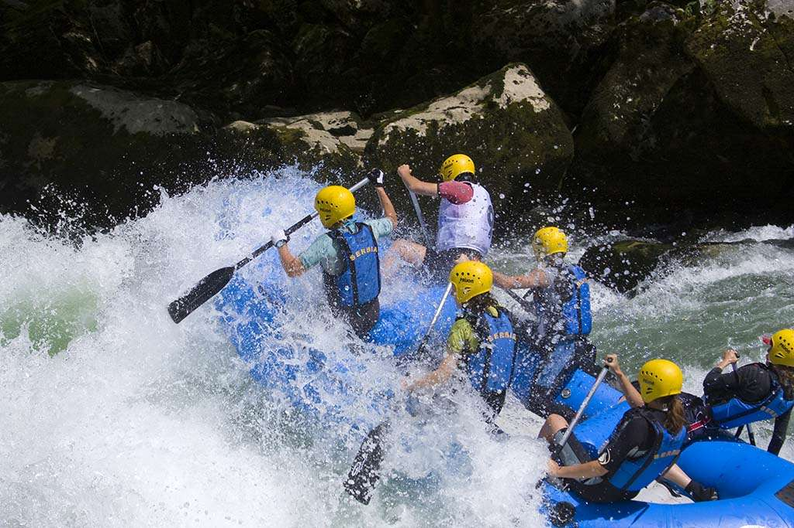
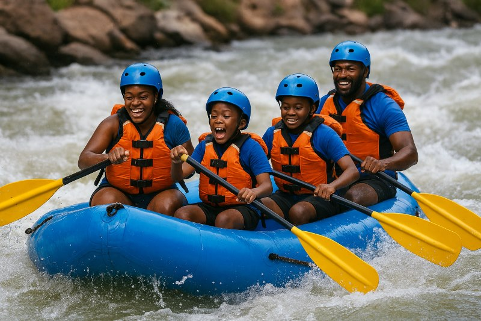
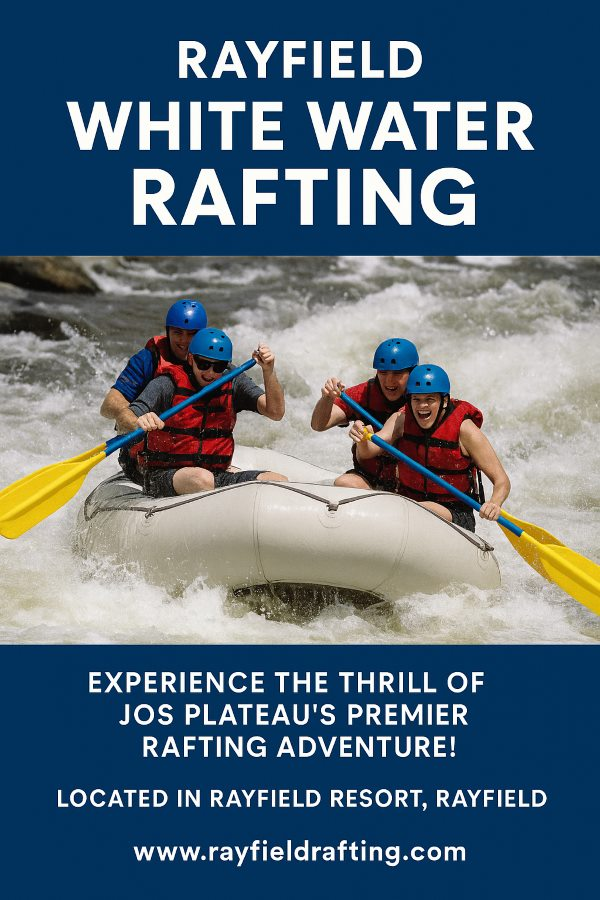

At Rayfield White Water Rafting, our mission is to ignite the spirit of adventure by taking you throug an unforgettable river journey. Our creed is safety and thrill. Our motto is Live for the Moment!


Rayfield White Water Rafting
History
Rayfield White water Rafting is located inside the historic Rayfield Resort, one of Jos Plateau’s oldest leisure destinations and a beloved recreational landmark. Rayfield itself is a prestigious and scenic suburb of Jos, known for its calm atmosphere, beautiful natural landscape, and its iconic lake—a defining feature of the resort. Rayfield Resort grew around its large natural lake, which has long served as a gathering point for relaxation, boating, and water based activities.
Rayfield Resort, in particular, is known for offering boating, children’s parks, live performances, and other entertainment features, making it a central hub for leisure in the area. As visitors increasingly sought more adventurous activities to complement the peaceful lake environment, the concept of Rayfield White water Rafting was developed to add a unique thrill to the resort’s offerings. Building on the resort’s reputation as a waterfront recreational center once a mining site and later transformed into a beloved resort space.
Adventure Awaits You!